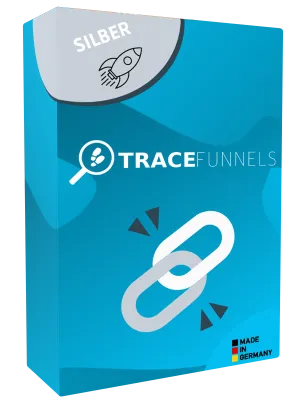

TraceFunnels - Das Funnel Tracking Tool 2021
Produktprofil · Marktplatz-Daten 2026-10-14 · Verkaufsseiten-Recherche 2026-10-14 · Kategorien: Software
- TraceFunnels - Das Funnel Tracking Tool 2021 ist ein/e Mitgliederbereich & Videokurs in Software, vertrieben über den Digistore24-Marktplatz von Anbieter TraceFunnels, gelistet seit 2020-12-28.
- Listenpreis $186.84 (subscription) — Checkout, Auslieferung und Rückerstattungen laufen über Digistore24 selbst, nicht über den Anbieter.
- Käuferschutz: keine standardisierte Garantie-Formulierung gefunden — Rückerstattungsbedingungen vor der Zahlung auf der offiziellen Seite prüfen.
Interesse an TraceFunnels - Das Funnel Tracking Tool 2021? Aktueller Preis, Boni und Garantiebedingungen finden Sie auf der offiziellen Seite des Anbieters:
Offizielle Verkaufsseite ansehen
Affiliate-Link (Werbung) — wir verdienen ggf. eine Provision, ohne Mehrkosten für Sie.

Marktplatz-Daten
| Produkttyp | Mitgliederbereich & Videokurs |
|---|---|
| Preis | $186.84 (Subscription) |
| Garantie/Rückgabe | Laut Verkaufsseite des Anbieters — vor dem Kauf auf der offiziellen Seite prüfen |
| Anbieter | TraceFunnels (gelistet seit 2020-12-28) |
Marktplatz-Beschreibung des Anbieters
Mit deinen Empfehlungen passiv und wiederkehrend Geld verdienen Das TraceFunnels Partnerprogramm Deine Vorteile: Software as a Service Produkt Made in Germany Deutscher Support & Kundenservice Sichere Anmeldung & Zahlungsabwicklung über Digistore24.com 30% Lifetime Provision* *Voraussetzung ist, dass die Abos, der von dir empfohlenen Kunden, nicht widerrufen wurden. Es ist ganz einfach : Schritt 1. Empfehle TraceFunnels den Besuchern deiner Website, den Empfängern deiner E-Mails oder schalte Werbung. Schritt 2. Deine Besucher melden sich bei TraceFunnels an. Begeistert von TraceFunnels, werden diese zu treuen und erfolgreichen Abonnenten. Schritt 3. Erhalte 30% Lifetime-Provision auf den Account und alle Zusatzkäufe deiner Kunden, solange diese aktive Kunden sind. TraceFunnels, der fortschittlichste Link-Shortener Deutschlands. Tracke unbegrenzt viele Links, nutze deine eigene Domain, tracke die Link-Aufrufe LIVE, führe detaillierte Split-Tests durch, u.v.m. Zum unschlagbaren Preis!
Von der Verkaufsseite des Anbieters
Wie Produkte dieser Art geliefert werden
Allgemeiner Hinweis zu diesem Produkttyp (keine anbieterspezifische Anleitung): Videokurse laufen über einen Mitgliederbereich: nach dem Checkout erhalten Sie Zugangsdaten per E-Mail und können die Lektionen in Ihrem eigenen Tempo streamen. Für die genaue Anwendung von TraceFunnels - Das Funnel Tracking Tool 2021 sind die offizielle Verkaufsseite und die enthaltenen Materialien maßgeblich.
Was ist TraceFunnels - Das Funnel Tracking Tool 2021?
TraceFunnels - Das Funnel Tracking Tool 2021 ist ein/e mitgliederbereich & videokurs in der Kategorie Software des Digistore24-Marktplatzes, veröffentlicht von Anbieter TraceFunnels und im Verkauf seit 2020-12-28. Der Anbieter beschreibt es so: "Mit deinen Empfehlungen passiv und wiederkehrend Geld verdienen Das TraceFunnels Partnerprogramm Deine Vorteile: Software as a Service Produkt Made in Germany Deutscher Support & Kundenservice Sichere Anmeldung & Zahlungsabwicklung über Digistore24.com 30% Lif" (Marktplatz-Beschreibung des Anbieters, leicht gekürzt).
TraceFunnels - Das Funnel Tracking Tool 2021 Preis: was Sie zahlen
Der Marktplatz listet TraceFunnels - Das Funnel Tracking Tool 2021 zum $186.84 Preis (subscription). Digistore24 fügt im Checkout die gesetzliche Steuer Ihres Landes hinzu — dort sehen Sie den Endbetrag vor der Zahlung. Eine separate Plattformgebühr gibt es nicht; Anbieter können eigene Upsells nach dem Checkout anbieten.
TraceFunnels - Das Funnel Tracking Tool 2021 Rückerstattung und Geld-zurück-Garantie
Wir haben keine standardisierte Garantie-Formulierung auf der Verkaufsseite gefunden. Rückerstattungen für Digistore24-Käufe laufen über die Plattform: Antrag über den Support-Link in Ihrer Bestell-E-Mail, innerhalb des Garantiezeitfensters, das im Checkout angezeigt wird. Praktischer Rat: Entscheiden Sie innerhalb des Fensters — wenn das Produkt unter den Erwartungen bleibt, erstatten lassen statt irren lassen.
Mechanik im Detail: So funktionieren Digistore24-Rückerstattungen.
Für wen ist TraceFunnels - Das Funnel Tracking Tool 2021 geeignet?
Basierend auf der Software-Einordnung und der subscription-Abrechnung richtet sich TraceFunnels - Das Funnel Tracking Tool 2021 an Käufer, die software-Lösungen suchen und ein Budget für einen Premium-Kauf eingeplant haben. Der ehrliche Test ist nicht die Kategorie, sondern Ihre eigene Situation: Werden Sie es realistisch innerhalb des Garantiefensters nutzen? Wenn ja, ist der Preis eine Investition; wenn nein, ist er Ballast — unabhängig von der Qualität.
Ist TraceFunnels - Das Funnel Tracking Tool 2021 seriös? Was Sie vor dem Kauf prüfen
Wir bewerten keine Seriosität — das kann niemand, ohne das Produkt zu nutzen. Prüfbare Punkte, alle auf dieser Seite: die Marktplatz-Historie des Anbieters (im Verkauf seit 2020-12-28), die wörtlichen Verkaufsseiten-Auszüge unten (gekennzeichnet als Anbieteraussagen — deren Werbung, nicht unsere Empfehlung), die Garantiebedingungen im Checkout und die Auslieferungsart. Vorsichtsignale bei jedem Angebot: Countdown-Dringlichkeit gepaart mit vagen Rückerstattungsbedingungen, Testimonials ohne Datum und Anbieterseiten, die den Preis bis zum Checkout verstecken.
Wie kommen Sie nach dem Kauf an TraceFunnels - Das Funnel Tracking Tool 2021?
Der Checkout läuft über Digistore24. Nach der Zahlung: Videokurse laufen über einen Mitgliederbereich: nach dem Checkout erhalten Sie Zugangsdaten per E-Mail und können die Lektionen in Ihrem eigenen Tempo streamen. Bewahren Sie die Bestell-E-Mail auf — sie ist Ihr Schlüssel zum/d zur mitgliederbereich & videokurs, zu Rückerstattungsanträgen und zum Digistore24-Käufersupport.
TraceFunnels - Das Funnel Tracking Tool 2021 Erfahrungen: so recherchieren Sie richtig
Die meisten „Erfahrungsberichte" zu Marktplatz-Produkten sind Affiliate-Inhalte — einschließlich Seiten wie dieser, die an Käufen mitverdienen. Behandeln Sie jeden Bericht (auch unseren) als Ausgangspunkt und prüfen Sie gegen Primärquellen: die Verkaufsseite des Anbieters, die Digistore24-Rückerstattungsrichtlinie und — für software — unabhängige Communities außerhalb des Affiliate-Ökosystems. Auf dieser Seite sind die Verkaufsseiten-Auszüge unten wörtlich zitiert, damit Sie die Aussagen des Anbieters bewerten können, ohne wegzuklicken.
Wie Sie TraceFunnels - Das Funnel Tracking Tool 2021 sicher kaufen
- Öffnen Sie die offizielle Verkaufsseite und lesen Sie das vollständige Angebot.
- Bestätigen Sie Endpreis und Garantiezeitfenster auf der Digistore24-Kassenseite — sie ist bindend, kein Vergleichsportal.
- Zahlen Sie innerhalb des Digistore24-Checkouts (niemals per Überweisung oder Off-Platform-Links).
- Speichern Sie die Bestellbestätigung; notieren Sie die Rückerstattungsfrist im Kalender.
- Prüfen Sie zügig. Der Digistore24-Käufersupport hilft, wenn der Anbieter nicht reagiert.
Vollständiges Recherche-Archiv für dieses Produkt (Markdown: kompletter Marktplatz-Datensatz + wörtliche Verkaufsseiten-Auszüge): TraceFunnels - Das Funnel Tracking Tool 2021 — Datenarchiv (.md).
- Listenpreis & Abrechnung — Quelle: offizielle Digistore24-Marktplatz-API, Stand 2026-10-14. Maßgeblich für den aktuellen Preis ist immer die Kassenseite.
- Verkaufsseiten-Zitate — Quelle: https://tracefunnels.com/, abgerufen 2026-10-14 (Methode: rohes HTML). Verify: offizielle Seite öffnen.
- Garantie / Rückgabe — vom Anbieter festgelegt; vor dem Kauf auf der Verkaufsseite bestätigen.
- Nicht von uns geprüft: Produktqualität, Ergebnisse, Testimonials — kein Praxistest für dieses Listing durchgeführt.
Häufige Fragen zu TraceFunnels - Das Funnel Tracking Tool 2021
Antworten aus dem Marktplatz-Snapshot (2026-10-14) und der Verkaufsseiten-Recherche (2026-10-14); Anbieteraussagen sind inline gekennzeichnet.
Was ist TraceFunnels - Das Funnel Tracking Tool 2021?
TraceFunnels - Das Funnel Tracking Tool 2021 ist ein Angebot des Typs „Mitgliederbereich & Videokurs" im Digistore24-Marktplatz, Anbieter: TraceFunnels, gelistet seit 2020-12-28. Eingepflegt unter Software. Digistore24 wickelt Checkout, Lieferung und Rückgaben ab.
Wie viel kostet TraceFunnels - Das Funnel Tracking Tool 2021?
Der Digistore24-Marktplatz listet es für $186.84 (subscription). Preise legt der Anbieter fest und können sich ändern — der Marktplatz-Eintrag oben zeigt den Schnappschuss; die offizielle Verkaufsseite zeigt den aktuellen Preis.
Gibt es eine Geld-zurück-Garantie für TraceFunnels - Das Funnel Tracking Tool 2021?
Unsere Verkaufsseiten-Recherche hat keine explizite Garantie-Formulierung gefunden. Viele Digistore24-Produkte bieten 60 Tage Geld-zurück, aber das legt jeder Anbieter selbst fest — bestätigen Sie es auf der offiziellen Verkaufsseite, bevor Sie kaufen.
Ist TraceFunnels - Das Funnel Tracking Tool 2021 seriös?
Wir bewerten keine Seriosität — wir veröffentlichen überprüfbare Zahlen: Anbieter TraceFunnels (gelistet seit 2020-12-28), mit der vollständigen Verkaufsseiten-Recherche archiviert auf dieser Seite (Anbieteraussagen als solche gekennzeichnet). Lesen Sie unsere 6-Punkte-Bewertungsmethode und entscheiden Sie anhand der Zahlen — oder diskutieren Sie TraceFunnels - Das Funnel Tracking Tool 2021 auf GitHub.
Wo kann ich TraceFunnels - Das Funnel Tracking Tool 2021 sicher kaufen?
Nur über die offizielle Verkaufsseite, die auf dieser Seite verlinkt ist (Checkout und Rückgaben laufen über Digistore24). Prüfen Sie dort Preis und Garantie vor der Bestellung. Der Link ist ein Affiliate-Link — der Kauf unterstützt diese Website ohne Mehrkosten für Sie.
Wie erhalte ich TraceFunnels - Das Funnel Tracking Tool 2021 nach der Zahlung?
Der Checkout läuft über Digistore24: Nach der Zahlung erhalten Sie Zugangsdaten und Ihr Abo-Dashboard. Lieferdetails für diesen Produkttyp: Videokurse laufen über einen Mitgliederbereich: nach dem Checkout erhalten Sie Zugangsdaten per E-Mail und können die Lektionen in Ihrem eigenen Tempo streamen. Bei Problemen kann der Digistore24-Käufersupport Ihre Bestellung wiederherstellen.
Alle 50 Käuferfragen zu Software — das komplette Kategorie-FAQ.
TraceFunnels - Das Funnel Tracking Tool 2021 auf Reddit diskutieren
In Community-Threads vergleichen echte Käufer Erfahrungen. Wir verlinken Communities, keine einzelnen Posts — Threads verschwinden, Subreddits bleiben:
- r/de_EDV — deutschsprachige Community mit Diskussionen zu software.
- Reddit-Suche nach „TraceFunnels - Das Funnel Tracking Tool 2021" — Live-Ergebnisse, von uns nicht beeinflusst.
- Top-„Erfahrungs"-Treffer dieses Jahr — selbst nach Aktualität filtern.
Passendes auf Amazon.de
Physische Produkte und Zubehör, die häufig zusammen mit TraceFunnels - Das Funnel Tracking Tool 2021 gekauft werden:
- Software auf Amazon.de — Top-Ergebnisse, Amazon-Ranking.
- Bestseller: Software — live Liste von Amazon, von uns nicht kuratiert.
Werbung: Als Amazon-Partner verdient DigistorePicks DE an qualifizierten Käufen (Partner-tag adminstorede-21). Amazon setzt eigene Preise und Provisionen (niedrige einstellige Prozente — weit unter den 30–75% der Digistore24-Anbieter). Amazon ist ein Convenience-Angebot für Sachprodukte, kein Ersatz für das digitale Produkt oben.
Ähnliche Angebote in Software

Maya: digitale Assistentin für WhatsApp und Telefon Maya beantwortet Kundenanfragen kleiner Betriebe rund um die Uhr auf WhatsApp und im Paket mit Telefon auch

Zencaptcha schützt Webseiten vor Spam und betrügerischen Aktivitäten. Falsche und temporäre E-Mail-Adressen werden erkannt und Bots werden herausgefordert, noch

+++ Willkommen beim Meisterbot-Partnerprogramm! +++ Verdienen Sie über 850 EUR Provision pro Sale mit der ersten schlüsselfertigen KI-Telefonzentrale für den Mi

Verdienen Sie 40 % Provision! Werden Sie Affiliate und profitieren Sie von unserem attraktiven 40% Partnerprovisionssatz – eine der höchsten Provisionen auf Dig
Ähnliche Preislage in Software

Hallo Lieber Affiliate Wenn du diesen Kurs bewirbst, darfst du dich auf 50% Provision freuen :-) Besuche über den Link gerne auch meine Affiliate Support Seite,

Fertiges Pre-Sale Page System für Affiliates – ideal zur besseren Monetarisierung von Content und E-Mail-Klicks Das Pre-Sale Page System ist perfekt für Affilia

Mit dem Affiliate Review System erstellst du professionelle Affiliate-Reviews deutlich schneller – ohne komplizierte Technik, ohne WordPress-Zwang und ohne Date

Automatische Signale zur Gold/Silber-Ratio, dem Kursverhaeltnis von Gold zu Silber – direkt per Telegram und im persoenlichen Web-Dashboard. Kunden bekommen tae
Ähnliche Suchanfragen
Wo Sie es sich ansehen können
Wo Sie es sich ansehen können
Aktuelle Preise, Garantie und Boni finden Sie auf der offiziellen Verkaufsseite:
Offizielle Verkaufsseite ansehen
Das ist ein Affiliate-Link (Werbung) — kaufen Sie darüber, verdienen wir ggf. eine Provision, ohne Mehrkosten für Sie.
Quellen & weiterführende Informationen
- Offizielle Verkaufsseite (aktueller Preis, Garantie, Boni): tracefunnels.com/ (Affiliate-Link)
- Öffentliche Digistore24-Produktseite: checkout-ds24.com/product/364920
- Vollständige Recherche-Datei (Markdown, versioniert): content/products/33084-tracefunnels-das-funnel-tracking-tool-2021.md
- Marktplatz-Kategorie: Software
Wie wir Produkte wie TraceFunnels - Das Funnel Tracking Tool 2021 bewerten
Sechs Prüfungen, ausschließlich mit offiziellen Marktplatz-Zahlen. Die vollständige Bewertungsmethode lesen · unsere Recherche-Standards & Kennzeichnung.
Fragen oder eigene Erfahrungen mit TraceFunnels - Das Funnel Tracking Tool 2021?
Praxis-Tests veröffentlichen wir erst, nachdem wir ein Produkt selbst gekauft haben — aber Ihre Erfahrung hilft anderen Lesern: Diskussion zu TraceFunnels - Das Funnel Tracking Tool 2021 auf GitHub starten/verfolgen. Falsche Zahl gefunden? Korrektur melden — jede Seite zeigt ihre Datenstände, Korrekturen gelten für die ganze Website.